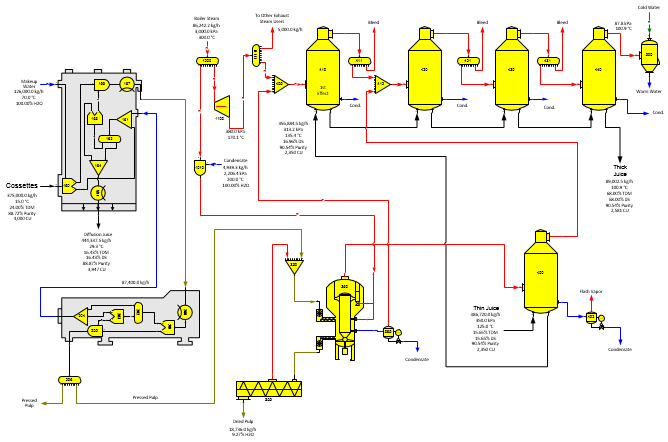

The flow diagram for the Steam Pulp Dryer example model of a high pressure steam pulp dryer with a diffuser, pulp press, steam pressure reducer and desuperheater, turbo generator and thin juice pre-concentrator and four effect-multiple evaporator is shown in the above diagram. The pressed cossettes are dried in a high-pressure steam pulp dryer and vapor from the dryer is sent to a thin juice pre-concentrator. Hot dried pulp is flashed (station no. 352) to a receiver station (no. 351) to preheat the pressed pulp and condensate from the dryer is flashed (station no. 355) to the steam receiver (station no. 405) for the thin juice multiple-effect evaporators. The flash tank for the hot dried pulp does not use pressure feedback, but the condensate flash tank does use pressure feedback. Steam flow into the thin juice pre-concentrator (station no. 400) is not a required flow because a value is not specified for the dry substance of the thin juice going from the pre-concentrator to the multiple-effect. Instead, the amount of evaporation done in the pre-concentrator is controlled by the amount of vapor from the steam dryer. The pressure reducer and desuperheater are modeled using a blender station (no. 1010). The pressure of the condensate into the desuperheater controls the output pressure of the desuperheater (blender), and the temperature of the desuperheater steam is set in the blender station (no. 1010). A turbine (station no. 1100) provides exhaust steam for the process. High-pressure steam into the model is an external flow.